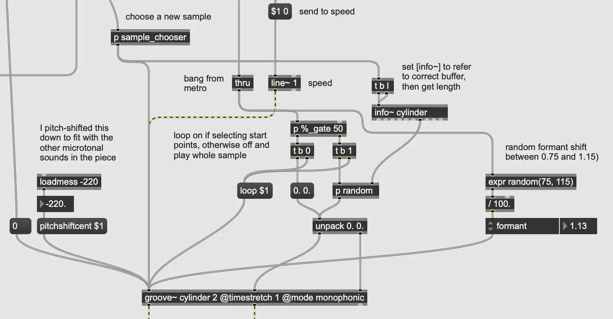

Glitchy Lofi Piano Looper + Radio, Part 1
Hi everyone! Today's post is on Max/MSP sound design. I'll be talking about how I got this sound I posted about on my Mastodon a few weeks ago. It's part of a trio I'm writing for MIDI keyboard, clarinet, and percussion tentatively titled Forget your name.
I mentioned in my Feb. 27 post that I've been using the fftz.ether~ Max/MSP object to combine the spectra of two sounds. It compares each FFT bin between the two sounds, and selects the one that's either quieter or louder, depending on the settings. Here I'm using it to combine glitching lofi piano/percussion with various radio sounds.
Since I'm busy finishing up my semester of teaching, I'll be splitting this between two or so posts. Today, let's look at how I made the looping piano snippets. You can download the patch here.
Making the Piano Snippets
To start, I combined some lofi piano, bell, and percussion sounds, and used iZotope's Vinyl plugin to add a large amount of record noise. The source samples are by holizna on freesound.org, and he kindly released them under a CC0 license. I used Logic Pro to split the audio at the transients (select a region; ctrl + cmd + shift + S). I then exported all of the resulting snips as individual audio files. Here is the audio before chopping at the transients:
Loading the Snippets into a polybuffer~ in Max/MSP
The polybuffer~ object can load multiple sound files into a collection of buffers that it manages, which can be independently accessed and assigned to a groove~ object for playback. I send the polybuffer~ the message "readfolder" followed by the absolute path to the subfolder in which I store the audio snippets. You can get the absolute path to the parent patch by sending thispatcher a "path" message, and then use combine to add the path for the subfolders.
After instructing polybuffer~ to load the files, I send it the message "getbufferlist", which causes it to output the word "bufferlist", the buffers one-by-one, and then the message "bufferlist done". If I filter out the words "bufferlist" and "done" using zl.filter, I can collect the buffers into a single list with zl.group. I can listen for the word "done" using a sel object (placed "upstream" of the zl.filters), and send a bang to zl.group to output the finished list. Prepending "store 0" before the list of buffers stores the list in a coll object (essentially a lookup table) at the index 0 for the next step. I repeat this whole process to add snippets of record clicks and pops to the same coll at index 1. The patch so far is shown below:
Looping and Mangling the Snippets
By naming the coll objects in the sample_chooser subpatcher the same as the one from the previous step, I'm able to access this list of buffers in the playback section of the patch. First I dump the entire list of buffers and use zl.len (gets length of a list) to get the number of sub-buffers. I can then use this length to set the size for an urn object (random without repeats), and use the random numbers from the urn along with the "nth" message to select buffers at the appropriate index from the coll. Note that you will have to add one to the random values from urn because the "nth" method starts at one instead of zero — this fact regularly trips me up. The vinyl_pops_chooser subpatcher does the same thing with the list of samples at index 1 in the coll. The contents of this subpatcher are shown below:
I have a metronome object plus a random number generator sending out a clock pulse that varies in rate with each pulse. I use that with a chain of counters to periodically load new buffers from the polybuffer~ into groove~ for playback. Throughout the patch I have subpatchers labeled %_gate — these are "Bernoulli gates." When a message or bang enters the gate, the subpatcher makes a random number between 0–100; checks if that value is less than or equal to a threshold; and if so, allows the message/bang through. The patcherargs object in these subpatchers gets the number typed after the patcher name and uses this as a threshold/probability for the gate. See below:
I randomly set the playback length either equal to the snippet, or equal to a subsection of the snippet, and if it's a subsection, I set the groove~ object to loop. I get the length of a snippet by using the info~ object and setting that to reference the appropriate buffer. A nice result of choosing random subsections to loop is that sometimes these sections are extremely short, and looping them produces a high-pitched, glitchy tone that pops out of the texture.
I have the groove object set to time stretching mode, and based on a probability I set, I play the snippet back either slowly or at normal rate. I also randomly shift the formant up or down within a small selected range. See below:
Finally, I have another polybuffer~ loaded with short vinyl scrapes and pops, and using a similar setup to the piano snippets, I periodically play one of those back. All together, the mangling sounds like this:
Conclusion
That's all for today! I'm finishing up my semester of teaching, and you can expect a part two for this soon. Please feel free to download this patch and play around with it in the meantime. I'm also interested in feedback on this post. My aim is for it to be a good amount of explanation for a relatively broad audience — not so deep that it loses people, but not leaving out necessary detail. If you could comment letting me know how you found it, that would be appreciated!
User Comments